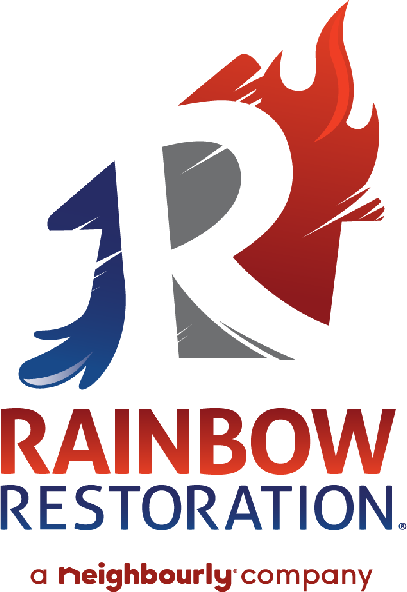
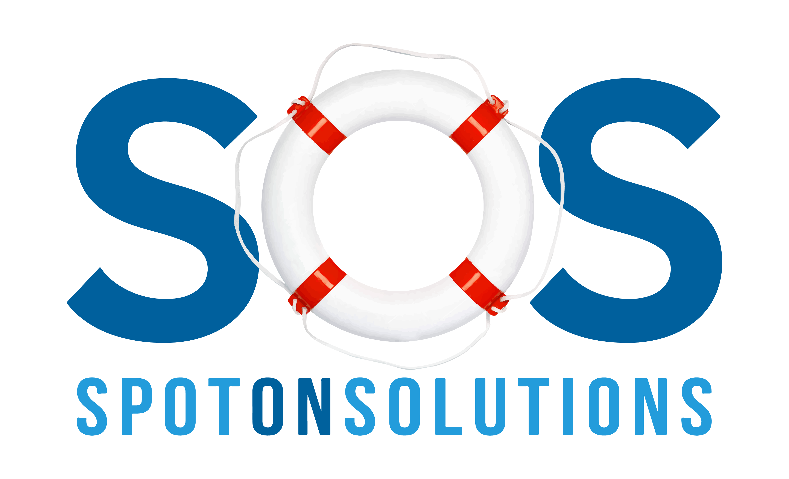

The 2026 Restoration
State of the Industry
Rainbow Restoration Regionals 2026 | Spot On Solutions
Welcome everyone. I'm [Name] from Spot On Solutions. Over the next 15 minutes we're going to walk through the state of restoration marketing right now — what's changed, what the data says, and what the operators who are growing are doing differently.
How your customers find you has changed
Has your marketing kept up?
Whether you're running ads, relying on referrals, or somewhere in between — the way homeowners find and choose a restoration company has fundamentally shifted. The search results page looks different. AI is changing how people research. Your competitors are spending more on digital every quarter. So the question is — has your marketing adapted?
The Old Way of Marketing Is Broken
Lead Volume ≠ Revenue. 50 "tire-kicker" leads are worse than 5 booked jobs.AI Has Taken the Wheel. Google Ads is now "automation-first." Manual control is disappearing.2026 is about Discipline. The franchises growing are the ones saying "No" to distractions.
The playbook from two years ago doesn't work anymore. The operators who are winning have adapted. The ones who haven't are paying more for less.


Let's start with reality. If you're still running marketing the way you did two years ago, you're leaving money on the table. Lead volume doesn't equal revenue — 50 tire-kicker leads are worse than 5 booked jobs. Google Ads is now automation-first — the manual control you used to have is disappearing. And spreading your budget across 5 channels hoping something works — that scatter strategy fails. The franchises growing right now are the ones with discipline and focus.
3 Major Shifts Caused by AI
AI Runs the Ads
Google Ads is now "automation-first" (AI Max / PMax). Manual bidding is disappearing. The algorithm decides who sees your ad.
Google Is an Answer Engine
AI Overviews answer customer questions on the search page, reducing website clicks. Your GBP is now your "second homepage."
Trust Is the New Currency
In a world of AI content, real reviews and human video matter more than keyword stuffing. Authenticity wins.
The bottom line: Algorithms find the customer. Humans close the customer. Speed to lead and review velocity are your biggest competitive advantages.
Three major shifts are driving all of this. First — AI runs the ads now. Google Ads is automation-first. The algorithm decides who sees your ad, not your keyword list. Second — Google is becoming an answer engine. AI Overviews are answering questions right on the search page. Your website gets fewer clicks, but your Google Business Profile matters more than ever. Third — trust is the new currency. In a world flooded with AI-generated content, real reviews and real video of your team doing the work are what set you apart.
What Your Customers Are Actually Doing
84%
took action after seeing
29%
already have a company name
58%
were influenced by a blog
3.5%
say they don't read
48% will skip your website if it loads slowly and try a competitor
25% never go past the first page of search results
97% of operators say referrals are still the #1 source of new business
Sources: AdMall/SalesFuel AudienceSCAN 2025; Cleanfax Restoration Benchmarking Survey 2024
So what are your customers actually doing? 84% of restoration customers took action after seeing a Google Ads result — that tells you search advertising works. But 29% already had a company name in mind before they searched — brand recognition is doing the heavy lifting for almost a third of your potential customers. 58% were influenced by a blog post in just the last 30 days. And only 3.5% say they don't read reviews — that means virtually everyone is checking your reviews before they call. Your website speed matters too — 48% will bounce if it loads slowly. And 97% of operators say referrals are still number one. The theme here is trust — it has to be built before the emergency.
Where Information (Not Ads) Drives Action
Audience vs. U.S. Benchmark
Google / Internet Search
+14%
Face-to-Face / Word of Mouth
+11%
Social Network Posting
+3%
Social Media Influencer
–5%
Forums / Message Boards
–6%
Non-advertising information sources influencing consumer action
Source: AudienceSCAN®, national consumer research
This chart shows what influences your customers outside of advertising. Google search is number one at 52%. Word of mouth is second at 46%. Social media posts are third at 45%. Notice that ChatGPT and AI tools are already at 28% — highlighted in red because that number is climbing fast. Blog posts, forums, and event sponsorships are all at 21%. The takeaway is that your customers are being influenced by a lot more than your ads. Your content, your social presence, your reviews, your reputation — all of it is driving decisions.
Searches vs. Cost Per Click
CPC is rising faster than search demand. Competition is increasing — more companies bidding on the same keywords. The cost of showing up is going up even when demand stays flat.
This is an important chart. The blue line is search demand — how many people are searching for restoration services. It's relatively stable throughout the year with some seasonal fluctuation. The gray line is CPC — what you're paying per click. It's rising faster than demand. That means more companies are competing for the same number of searches. The cost of showing up is going up even when the demand stays flat. This is why you can't just rely on paid search alone — you need to build the brand so people search for you by name, where the competition and cost are much lower.
Brand vs. Generic: Where the Growth Is
Brand clicks are up ~5% — people searching your name
Generic clicks are down ~3% — "water damage near me" is shrinking
Branded searches convert at 6x the rate of generic terms
Every dollar in brand awareness reduces your future cost per lead
This is the argument for brand investment. The companies growing are the ones people search by name.
This chart tells the whole story. Brand clicks — people searching your company name — are up about 5%. Generic clicks — "water damage restoration near me" — are actually down about 3%. And remember, branded searches convert at 6x the rate of generic terms. So the companies that are investing in brand awareness — social media, community involvement, truck wraps, content — are getting more of the high-converting searches while the generic pool shrinks. This is the argument for investing in the top of the funnel. It pays off at the bottom.
What We Saw Across Our Restoration Clients
+27.8%
Google Ads Spend
+63.9%
LSA Spend
+38.6%
Google Ads Conversions
Conversions grew faster than spend — the industry CPL actually decreased
31% of consumers now require 4.5+ stars to consider a business — up from 17% last year
Branded searches convert at 6x the rate of generic service terms
Sources: SOS x C&R Magazine Cleaning & Restoration Digital Advertising Report 2026; BrightLocal LCRS 2026
We analyzed over $10 million in restoration ad spend across our clients. Google Ads spend grew 27.8% year over year. LSA spend grew almost 64% — the fastest-rising channel. But here's the good news: conversions grew faster than spend. The industry cost per lead actually went down. The operators who are optimizing are getting more efficient even as costs rise. Branded searches convert at 6x the rate of generic terms — when someone searches your company name, you've basically already won. And consumers are getting pickier — 31% now need 4.5 stars or higher just to consider you, up from 17% last year.
AI Is Changing How Customers Find You
2.8%
Google Conversion Rate
The Reality
Google still handles 90% of search
AI converts at 5x the rate
41% of restoration customers use AI to research
The Good News
Google and AI reward the same thing
Authoritative content, strong reviews, managed GBP
A brand worth citing — AI recommends what it "knows"
You don't need two strategies. Google and AI are two systems rewarding the same thing.
Source: Superprompt, 12M Visit Study, 2025
This is the slide I want you to remember. A study of 12 million website visits found that traffic from AI tools like ChatGPT converts at 14.2% compared to Google's 2.8%. That's 5x higher. Google still handles 90% of search — it's not going away. But AI is where the highest-quality traffic is coming from. The good news? Google and AI reward the same thing. Authoritative content. Strong reviews. A well-managed GBP. A brand worth citing. You don't need two strategies. You need one good one.
The Trust & Tech Era
Algorithms Find the Customer
AI decides who sees your ad better than humans can. Your job is to feed the machine good data — not micro-manage keywords.
Humans Close the Customer
Speed to lead and review velocity are your biggest competitive advantages. The first company to respond wins.
Differentiate with Trust
Real reviews. Real video. Real people. In a world of AI content, authenticity is what makes you stand out.
The trend: Moving from "keyword targeting" toward "audience targeting" — finding the right person at the right moment, then winning them with trust.
We're in what I call the Trust and Tech Era. The tech side — algorithms find your customers better than you can manually. Your job is to feed the machine good data. The human side — speed to lead, answering the phone, responding to reviews. The first company to respond still wins. And the differentiator is trust. Real reviews from real customers. Real video of your team on the job. In a world where AI can generate content for everyone, authenticity is what makes you stand out.
Thrivers vs. Survivors
The Thrivers
Consistent monthly budget
Track booked revenue, not just leads
Dominate 1-2 channels before adding more
Know their break-even CPL
Invest in brand and trust
vs
The Survivors
React to slow months with panic spending
Track "leads" including spam
Spread budget across 5 channels
No idea what a lead actually costs them
Chase the next shiny tactic
Which one are you? The difference isn't budget — it's discipline, tracking, and focus.
Let me paint two pictures. The thrivers — they have a consistent monthly budget. They track booked revenue, not just lead count. They dominate one or two channels before spreading to more. They know their break-even cost per lead and they cut anything that exceeds it. They invest in brand and trust. The survivors — they react to slow months with panic spending. They track "leads" that include spam and tire-kickers. They spread their budget across five channels hoping something sticks. They have no idea what a lead actually costs them. The difference isn't budget — it's discipline. Which one are you right now? And which one do you want to be?
Adapt the Strategy.
Authoritative content. Strong reviews. A brand worth citing.
Adapt the strategy — the old playbook is done. Build the trust — reviews, speed to lead, real content. Win the market — be the name they already know when the emergency hits. Thank you. We'll be around all day if you want to talk about any of this.